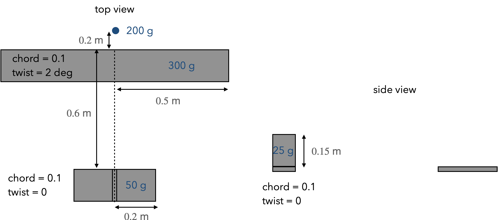

Model the following simple airplane in XFLR5. Use a NACA 0012 for every airfoil. Chord and twist is constant along each lifting surface (wing and tails). Report the eigenvalues and identify the corresponding mode (e.g., dutch roll, spiral). Report the key stability derivatives for static stability: \({C_m}_{,\alpha}, {C_n}_{,\beta}, {C_{roll}}_{, \beta}\). Just use sea-level properties (though it won’t matter for stability derivatives since they are normalized). Note that for stability a viscous analysis is optional. While the drag has a major role in performance, it typically has very little impact on dynamics. The most helpful videos for this problem are the first few minutes of 12, the first half of 13, and 14.

Consider a simplified battery model with just internal resistance and a capacity that is independent of current. We fit data for the open current voltage and the internal resistance of a Panasonic NCR18650G cell (high specific energy, which is important for aircraft applications). This fit is only reasonable for a SOC between 0.1 and 0.9 (we won’t operate outside those limits anyway because of degradation and max power requirements).
\[OCV = 0.39\, SOC^2 + 0.07 \, SOC + 3.7 \text{ Volts}\] \[R = 0.015\, SOC^2 - 0.025 \, SOC + 0.104 \text{ Ohms}\]The capacity of the cell is 3.55 Ah. The battery pack is arranged as follows (s means series, p means parallel):
| Submodule | 1s x 24p cells |
| Module | 20s x 1p submodules |
| Pack | 7s x 2p modules |
Now consider the following simplified aircraft mission:
| Segment | Time (minutes) | Power (kW) |
| Takeoff and Climb | 1 | 290 |
| Cruise | 35 | 75 |
| Aborted Descent and Climb | 1 | 180 |
| Reserve Cruise | 5 | 75 |
| Descent and Landing | 1 | 150 |
For each segment compute the current, battery voltage, efficiency, and the new state of charge at the end of the segment. Rather than integrating, for simplicity assume that open current voltage and resistance are constant within each segment, defined by the state of the charge at the start of that segment. Begin the mission with a state of charge of 0.9.